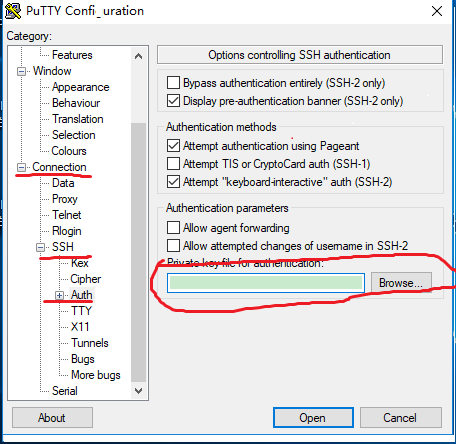

简介
docker 有提供windows 下基于VirtualBox/Hyper-V的安装包。
已安装VirtualBox的安装Hyper-V版的可能会有问题。
已安装VM类软件的，并已有黑苹果、Linux环境的，可以直接安装docker。curl -sSL https://get.docker.com/ | sh 之前文章有提到
如未安装其他系统，可以考虑使用RancherOS。
下面介绍使用VM安装RancherOS
这两天帮小伙伴在虚拟机上安装了RancherOS，一个通过容器构建的简单Linux发行版。只有几十M的系统镜像。
在docker上安装docker，挺有意思的。系统内核启动的第一个进程，PID为1的是“System Docker”，它的工作就是初始化系统服务，所有的进程、服务等等都是通过一个个Docker实例来完成的，System Docker类似于其它linux发行版中Systemd比如ArchLinux。
简要步骤
- 测试网络
- 更改rancher密码
- 配置cloud-config.yml后安装系统到硬盘
- 从硬盘启动
VM安装RancherOS注意点
- VM给RancherOS分配的内存最好大于1G，可以分配到2G;
- 硬盘可以看使用分配。如需要使用的大，可以分配多点。但不建议低于5G。我和小伙伴们都分配的20G;
- 网络模式看自己情况选择，我们使用的桥接模式;
- 启动后用户名密码都是rancher;
- 现在把RancherOS默认为内存模式启动，需配置cloud-config.yml安装到硬盘，不然会无限重启，或从硬盘找不到系统。
注意主机和VM的连通
注意主机和VM之间能互相ping通。主要是主机能访问到VM的SSHD服务，默认端口为22。可以使用映射，映射到主机其他端口。
查看VM的IP地址
1 | ip a | grep inet |
wlp3s0 之类的为无线网卡的地址
在主机和VM互相使用ping命令测试连通。
测试SSHD服务，可以在主机上使用telnet或putty，git bash中的ssh，或是其他连接工具。
使用秘钥对
使用已有的秘钥对，或是重新生成。
可以使用puttygen.exe，或是ssh-keygen命令重新生成。
使用puttygen.exe生成密钥对简要步骤
- 运行puttygen.exe
- 点击 Generate 按钮生成密钥
- 留意下创建的是ssh-2 RSA 和2048bit内容的密钥(使用默认的也都行)
- 等待。可在进度条下的软件空白处，移动鼠标，能加快Gen速度
- 创建完成后，将显示Public key，可以自行修改Key Comment备注信息
- 导出公钥和私钥
使用ssh-keygen命令生成密钥对
在window上可以使用Git Bash，然后使用ssh-keygen
1 | ssh-keygen -t rsa -b 4096 -C "your_email@example.com" -f ~/.ssh/id_rsa_rancheros |
成功将显示
Your identification has been saved in /Users/you/.ssh/id_rsa.
Your public key has been saved in /Users/you/.ssh/id_rsa.pub.
注意替换[your_email@example.com]为自己的邮箱
- -C 不使用，默认使用 当前用户名@主机名 的形式
- -f 不指定，默认使用~/.ssh/id_rsa
当然，也可以在提问保存地址时自行更改
使用puttygen.exe生成ppk格式私钥
现在挺多软件基于putty的ppk格式密钥。所以如果是使用的ssh-keygen生成的密钥对，可以在puttygen.exe中导入生成的私钥，生成ppk格式私钥。
- 运行puttygen.exe
- 点击Conversions菜单项中的Import key
- 选择生成的id_rsa文件
- 在puttygen.exe的界面上点击Save private key按钮就可以把私钥转换为ppk的格式了
使用命令行方式登录，可以配置config
在~/.ssh文件夹下，打开/创建 config 文件
1 | # rancheros |
HostName需替换为虚拟机IP地址
端口如映射为主机其他端口，也需更改，同时IP使用主机IP
配置cloud-config.yml
cloud-config.yml文件 自用,改后缀为yml，即改文件名为cloud-config.yml
1 | cloud-config |
- 注意将
https://99nkhzdo.mirror.aliyuncs.com替换为自己的阿里云Docker镜像地址。- 注意使用之前生成的公钥id_rsa_rancheros.pub中的内容替换BBB…ZZZ example2@rancher，同时去除#注释
- 如不能自动获取IP地址，将network下的#去除，同时，配置自己的address,gateway，与主机在同一网关
- cloud-config.yml文件格式。注意文件缩进使用空格键，不要使用TAB键。
- 注意Linux文件换行。
必须更改rancher密码
VM中使用更改rancher账户密码
注意启动之后默认的账号密码为rancher:rancher
默认密码可能不能使用SSH访问，必须进行一次修改密码，密码可仍使用rancher
1 | sudo passwd rancher |
输入密码rancher，确认密码rancher
切换到root用户
1 | sudo -i |
使用SFTP工具上传cloud-config.yml
可以直接在VM中进行修改。
如在主机上进行修改，则需使用SFTP工具上传cloud-config.yml文件。
如使用PSFTP.EXE
- 将cloud-config.yml拷入PSFTP.EXE同级目录
- open 192.168.1.172 连接上VMIP
- put cloud-config.yml
安装RancherOS到硬盘，从硬盘启动
如已调整启动顺序，优先从硬盘启动，是否重启选y，将自动重启。
未有调整，关机后，移除光驱，选择从硬盘启动，开机。然后使用ssh登录/或其他工具Putty、MobaXterm、XShell等登录。
1 | sudo ros config validate -i cloud-config.yml |
一般为/dev/sda，如不对，可以使用以下命令自行查看本地磁盘
1 | sudo fdisk -l | grep Disk |
查看ros配置
1 | sudo ros config export |
rancheros重启docker
1 | sudo system-docker restart docker |
补充:Putty配置ppk登录
- 在putty中选中id_rsa_rancheros
- 一般放在C:\Users<用户名>.ssh
- 然后在session中登入

其他界面工具类似，配置私钥/ppk格式私钥